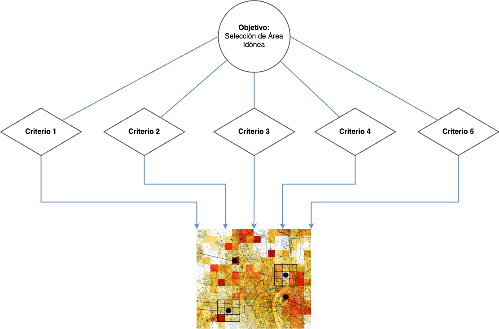
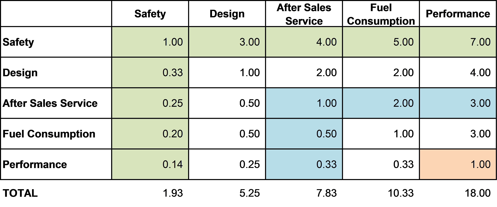

Appendix A — AHP Definiciones
Analytical Hierarchy Process (AHP)
A.1 Introducción
El Proceso de Análisis Jerárquico es una técnica estructurada para tratar con problemas complejos de decisión. Esta metodología permite la construcción de un problema a partir de objetivos, criterios y alternativas jerarquizados. El AHP fue desarrollado por T. L. Saaty (1980) y selecciona alternativas en función de una serie de criterios o variables normalmente jerarquizados. La aplicación del AHP puede ser utilizada para la selección de proyectos, la evaluación de riesgos, la toma de decisiones financieras, entre otros.
AHP es un método de comparación por pares que se utiliza en los criterios con respecto al objetivo, el cual es tomar la mejor decisión tomando en consideración diferentes criterios, por cada una de las alternativas, en el caso territorial serían las diferentes áreas (Figure A.1).

Estas comparaciones por pares se llevan a cabo para todos los factores relevantes dentro de un análisis considerando la siguiente escala. (Table A.1)
| Intensidad | Deninición | Explicación |
|---|---|---|
| 1 | Igual importancia | Dos criterios o elementos contribuyen de igual forma al cumplimiento del objetivo |
| 3 | Importancia moderada de un criterio sonbre el otro | La experiencia y el juicio favorecen levemente una actividad sobre la otra |
| 5 | Importancia esencial o fuerte | La experiencia y el juicio favorecen fuertemente una actividad sobre la otra |
| 7 | Importancia muy fuerte o demostrada | Una actividad es mucho más favorecida que la otra y su predominancia se demostró en la práctica predominancia se demostró en la práctica |
| 9 | Importancia extrema o absoluta | La evidencia que favorece una actividad sobre la otra es absoluta y totalmente clara |
| 2, 4, 6, 8 | Valores Intermedios | Cuando es necesario llegar a un compromiso entre dos sentencias adyacentes |
Una vez consolidados y clasificados los criterios en el MCDA en una matriz (Figure A.2), se utiliza el AHP para calcular las ponderaciones relativas, la importancia de cada criterio, que son relevantes para el problema en cuestión. Para validar la consistencia razonable de los juicios en la matriz de comparación por pares se calcula el índice de consistencia como validación.

Una vez asignados los pesos relativos, se calcula un vector de prioridad, que nos da el valor modificador de relevancia global para cada factor, que se utilizará en los cálculos del SIG.
A.2 Algoritmo (T. L. Saaty 1980)
De acuerdo con T. L. Saaty (1980), para n criterios es posible construir una matriz A=[a_{ij}], con i,j =1,2,...,n. El valor de cada a_{ij} corresponde a la importancia relativa del criterio C_i (fila i) sobre el criterio C_j (columna j), según la escala fundamental propuesta por Saati (Table A.1). Cuando i=j, el valor de a_{ij} será igual a 1 ya que estamos comparando un criterio con el mismo.
A= \begin{bmatrix} 1 & a_{1,2} & a_{1,3} & \dots & a_{1,n} \\ a_{2,1} & 1 & a_{2,3} & \dots & a_{2,n} \\ \vdots & \vdots & \vdots & \ddots & \vdots \\ a_{n,1} & a_{n,2} & a_{n,3} & \dots & 1 \end{bmatrix}
Luego de construir la matriz de comparación por pares, se procede a calcular el vector de prioridades. Este vector indica la influencia de un criterio sobre el objetivo global, en estos casos la ubicación óptima de una planta de generarción de energía eléctrica. Existen múltiples formas de calcular este vector, una de ellas es usando el método del vector propio principal w tal que:
A \times W = \lambda_{max} \times w
Donde \lambda_{max} es el máximo valor propio de la matriz A
Para calcular los vectores propios en el AHP, se normaliza la matriz de comparación pairwise y luego se encuentra su valor propio dominante y el correspondiente vector propio. El valor propio dominante representa el grado en que las alternativas se han priorizado y el vector propio representa los pesos asignados a cada alternativa en términos de su prioridad.
Luego, se calcula el valor propio dominante y el correspondiente vector propio usando técnicas matemáticas, como el método de potencias. El valor propio dominante (\lambda_{max}) se interpreta como el grado en que las alternativas se han priorizado, y el vector propio (w) se interpreta como los pesos asignados a cada alternativa en términos de su prioridad.
Finalmente se verifica la consistencia de la matriz de comparaciones pareadas. La matriz A es consistente si aij.ajk = aik para i,j,k = 1,2,...,n (Section A.3). Para validar la consistencia razonable de los juicios en la matriz de comparación por pares se calcula el índice de consistencia (IC) (Equation F.1) y la razón de consistencia (RC) (Equation F.2).
La razón de consistencia (RC) se calcula a partir de un índice de consistencia aleatorio (IA), que varía de acuerdo con el tamaño de la matriz A (Table B.2). La matriz se considera consistente si RC < IA; en caso contrario, se considera inconsistente y se aplica la corrección de consistencia planteada por Thomas L. Saaty (2003)
IC = \frac{\lambda_{max}-n}{n-1} \tag{A.1}
RC = \frac{IC}{IA} \tag{A.2}
| 1 | 2 | 3 | 4 | 5 | 6 | 7 | 8 | 9 | 10 | 11 | 12 | 13 | 14 | 15 |
| 0.00 | 0.00 | 0.52 | 0.89 | 1.11 | 1.25 | 1.35 | 1.40 | 1.45 | 1.49 | 1.52 | 1.54 | 1.56 | 1.57 | 1.59 |
A.3 Robustez Matemática
Reciprocidad: Si A_{ij} = X, entonces A_{ji} = 1/X, con 1/9 \leq X\leq 9.
Homogeneidad: Si los elemntos i y j son considerados igualmente importantes entonces
A_{ij}= A_{ji}= 1 además A_{ii} = 1 para todo i.
- Consistencia: Se satisface que A_{ik}*A_{kj}= A_{ij} para todo 1\leq i,j,k\leq q
A.4 Beneficios y ventajas del uso de AHP
- Un enfoque más estructurado para medir la idoneidad al dividir el problema en criterios jerárquicos.
- Un análisis más sistemático y profundo de los factores, que pueden comprenderse mejor al examinar específicamente sus formas o indicadores inferiores y más específicos.
- El AHP permite la participación tanto de expertos como de partes interesadas en la aportación de información. Dicho marco permite incorporar y acomodar criterios tanto cualitativos como cuantitativos y la aportación de conocimientos de expertos.
A.5 Referencias
Multi-Criteria Decision Analysis and GIS - Siobhan Ryan and Ellis Nimick